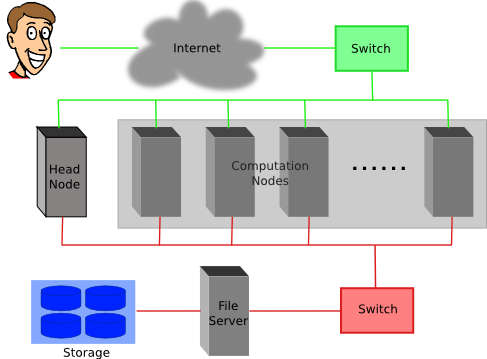

Maia
- 32-core Symmetric Multiprocessor (SMP) system available to all Lehigh Faculty, Staff and Students
- dual 16-core AMD Opteron 6380 2.5GHz CPU
- 128GB RAM and 4TB HDD
- Theoretical Performance: 640 GFLOPs (640 billion floating point operations per second)
- Access: Batch Scheduled, no interactive access to Maia
\[ GFLOPs = cores \times clock \times \frac{FLOPs}{cycle} \]
Using SLURM scheduler on Sol
Lehigh Research Computing
https://researchcomputing.lehigh.edu
Research Computing Resources
Research Computing Resources
- Sol
- Lehigh's Flagship High Performance Computing Cluster
- 8 nodes, dual 10-core Intel Xeon E5-2650 v3 2.3GHz CPU, 25MB Cache
- Each Intel Xeon E5-26xx v3 (Haswell) CPU is capable of 16 FLOPs
- Condo Investors
- Dimitrios Vavylonis, Physics
- 1 node, dual 10-core Intel Xeon E5-2650 v3 2.3GHz CPU, 25MB Cache
- Wonpil Im, Biological Sciences
- 25 nodes, dual 12-core Intel Xeon E5-2670 v3 2.5Ghz CPU, 30 MB Cache
- Dimitrios Vavylonis, Physics
- 128 GB RAM and 1TB HDD per node
- 2:1 oversubscribed Infiniband EDR (100Gb/s) interconnect fabric
- Theoretical Performance: 28.7 TFLOPs
- Access: Batch Scheduled, interactive on login node for compiling, editing only
LTS Managed Faculty Resources
- Monocacy: Ben Felzer, Earth & Environmental Sciences
- Eight nodes, dual 8-core Intel Xeon E5-2650v2, 2.6GHz, 64GB RAM
- Theoretical Performance: 2.662TFlops
- Eight nodes, dual 8-core Intel Xeon E5-2650v2, 2.6GHz, 64GB RAM
- Eigen: Heather Jaeger, Chemistry
- Twenty nodes, dual 8-core Intel Xeon E5-2650v2, 2.6GHz, 64GB RAM
- Theoretical Performance: 6.656TFlops
- Twenty nodes, dual 8-core Intel Xeon E5-2650v2, 2.6GHz, 64GB RAM
- Baltrusaitislab: Jonas Baltrusaitis, Chemical Engineering
- Three nodes, dual 16-core AMD Opteron 6376, 2.3Ghz, 128GB RAM
- Theoretical Performance: 1.766TFlops
- Three nodes, dual 16-core AMD Opteron 6376, 2.3Ghz, 128GB RAM
- Pisces: Keith Moored, Mechanical Engineering and Mechanics
- Six nodes, dual 10-core Intel Xeon E5-2650v3, 2.3GHz, 64GB RAM, nVIDIA Tesla K80
- Theoretical Performance: 4.416 TFlops (CPU) + 17.46TFlops (GPU)
- Six nodes, dual 10-core Intel Xeon E5-2650v3, 2.3GHz, 64GB RAM, nVIDIA Tesla K80
Account Management
- Apply for an account at the LTS website
- Click on Services > Account & Password > Lehigh Computing Account > Request an account
- Click on the big blue button "Start Special Account Request" > Research Computing Account
- Maia
- Click on "FREE Linux command-line computing"
- Sol
- Click on "Fee-based research computing"
- Annual charge of $50/account paid by Lehigh Faculty or Research Staff, and
- Annual charge for computing time
- Sharing of accounts is explicitly forbidden
- Users need to be associated with an allocation to run jobs on Sol
Allocation Charges
- Allocation: Amount of computing time that your research group is allowed to use in one year.
- Service Unit (SU): 1 hour of computing on 1 core of Sol
- SU Charge: 1¢
- Annual minimum purchase of 50,000 SUs and increments of 10,000 SUs.
- paid for by your account sponsor
- Total available computing time for purchase annually: 1,401,600 SUs or 1 year of continous computing on 8 nodes
- Condo Investors (Faculty who have increased Sol's capacity by purchasing 26 nodes)
- Provided with annual computing time equivalent to investment at no charge
- DV purchased 1 20-core node is provided with 175,000 SUs annually
- WI purchased 25 24-core nodes is provided with 5,256,000 SUs annually
- Can purchase additional SUs in increments of 10,000 SUs if required
- No 'free' computing time provided once allocation has been expended
Accessing Research Computing Resources
- Sol & Faculty Clusters: accessible using ssh while on Lehigh's network
ssh username@clustername.cc.lehigh.edu
- Maia: No direct access to Maia, instead login to Polaris
ssh username@polaris.cc.lehigh.edu- Polaris is a gateway that also hosts the batch scheduler for Maia
- No computing software including compilers is available on Polaris
- Login to Polaris and request computing time on Maia including interactive access
- If you are not on Lehigh's network, login to the ssh gateway to get to Research Computing resources
ssh username@ssh.cc.lehigh.edu
Software available on HPC systems
- Software on Sol is compiled for modern cpus and is available at /share/Apps
- Software is managed using module environment
- Why? We may have different versions of same software or software built with different compilers
- Module environment allows you to dynamically change your *nix environment based on software being used
- Standard on many University and national High Performance Computing resource since circa 2011
Software on Sol

Module Command
| Command | Description |
|---|---|
module avail | show list of software available on resource |
module load abc | add software abc to your environment (modify your PATH, LD_LIBRARY_PATH etc as needed) |
module unload abc | remove abc from your envionment |
module swap abc1 abc2 | swap abc1 with abc2 in your environment |
module purge | remove all modules from your environment |
module show abc | display what variables are added or modified in your environment |
module help abc | display help message for the module abc |
- Users who prefer not to use the module environment will need to modify their
.bashrc or .tcshrc files. Run
module showfor list variables that need modified, appended or prepended
Installed Software
- Chemistry/Materials Science
- CPMD
- GAMESS
- Gaussian
- NWCHEM
- Quantum Espresso
- VASP
- Molecular Dynamics
- Desmond
- GROMACS
- LAMMPS
- NAMD
- Computational Fluid Dynamics
- Abaqus
- Ansys
- Comsol
- OpenFOAM
- OpenSees
- Math
- GNU Octave
- Magma
- Maple
- Mathematica
- Matlab
More Software
- Scripting Languages
- R
- Perl
- Python
- Compilers
- GNU
- Intel
- PGI
- Parallel Programming
- MVAPICH2
- Libraries
- BLAS/LAPACK/GSL/SCALAPACK
- Boost
- FFTW
- Intel MKL
- HDF5
- NetCDF
- METIS/PARMETIS
- PetSc
- QHull/QRupdate
- SuiteSparse
- SuperLU
More Software
- Visualization Tools
- Avogadro
- GaussView
- GNUPlot
- VMD
- Other Tools
- CMake
- Gams
- Gurobi
- Scons
- You can always install a software in your home directory
- Stay compliant with software licensing
- Modify your .bashrc/.tcshrc to add software to your path, OR
- create a module and dynamically load it so that it doesn't interfere
with other software installed on the system
- e.g. You might want to use openmpi instead of mvapich2
- the system admin may not want install it system wide for just one user
- Add the directory where you will install the module files to the variable MODULEPATH in .bashrc/.tcshrc
# My .bashrc file
export MODULEPATH=${MODULEPATH}:/home/alp514/modulefiles
Module File Example

Cluster Environment
- A cluster is a group of computers (nodes) that works together closely
Two types of nodes
- Head/Login Node
- Compute Node
Multi-user environment
Each user may have multiple jobs running simultaneously

How to run jobs
- All compute intensive jobs are batch scheduled
- Write a script to submit jobs to a scheduler
- need to have some background in shell scripting (bash/tcsh)
- Need to specify
- Resources required (which depends on configuration)
- number of nodes
- number of processes per node
- memory per node
- How long do you want the resources
- have an estimate for how long your job will run
- Which queue to submit jobs
- Resources required (which depends on configuration)
Batch Queuing System
A software that manages resources (CPU time, memory, etc) and schedules job execution
- Sol: Simple Linux Utility for Resource Management (SLURM)
- Others: Portable Batch System (PBS)
- Scheduler: Maui
- Resource Manager: Torque
- Allocation Manager: Gold
A job can be considered as a user’s request to use a certain amount of resources for a certain amount of time
The batch queuing system determines
- The order jobs are executed
- On which node(s) jobs are executed
Job Scheduling
Map jobs onto the node-time space
- Assuming CPU time is the only resource
Need to find a balance between
- Honoring the order in which jobs are received
- Maximizing resource utilization

Backfilling
- A strategy to improve utilization
- Allow a job to jump ahead of others when there are enough idle nodes
- Must not affect the estimated start time of the job with the highest priority

How much time must I request
- Ask for an amount of time that is
- Long enough for your job to complete
- As short as possible to increase the chance of backfilling


Available Queues
- Sol
| Queue Name | Max Runtime | Total Nodes | Max nodes per job | SU consumed per hour |
|---|---|---|---|---|
| lts | 72 hours | 9 | 4 | 20 |
| bio | 48 hours | 25 | 4 | 24 |
- Maia
| Queue Name | Max Runtime | Max Simultaneous Core-hours |
|---|---|---|
| smp-test | 1 hour | 4 core hours |
| smp | 96 hours | 384 core hours |
Queues on Faculty Clusters
| Cluster | Queue | Max Runtime |
|---|---|---|
| Pisces | normal | 4 days |
| Monocacy | normal | 4 days |
| Eigen | adf | 14 days |
| normal | 14 days | |
| long | 28 days |
How much memory can I use?
The amount of installed memory less the amount that is used by the operating system and other utilities
A general rule of thumb on most HPC resources: leave 1-2GB for the OS to run.
Sol: Max memory used per node should not exceed 126GB.
- 20-core nodes have ~6.4GB/core
- max memory 6.3GB/core
- 24-core nodes have ~5.3GB/core
- max memory 5.25GB/core
- 20-core nodes have ~6.4GB/core
Maia: Users need to specify memory required in their submit script. Max memory that should be requested is 126GB.
Minimal submit script for Serial Jobs
#!/bin/bash
#PBS -q smp
#PBS -l walltime=1:00:00
#PBS -l nodes=1:ppn=1
#PBS -l mem=4GB
#PBS -N myjob
cd ${PBS_O_WORKDIR}
./myjob < filename.in > filename.out
#!/bin/bash
#SBATCH --partition=lts
#SBATCH --time=1:00:00
#SBATCH --nodes=1
#SBATCH --ntasks-per-node=1
#SBATCH --job-name myjob
cd ${SLURM_SUBMIT_DIR}
./myjob < filename.in > filename.out
Minimal submit script for MPI Jobs on Sol
#!/bin/bash
#SBATCH --partition=lts
#SBATCH --time=1:00:00
#SBATCH --nodes=2
#SBATCH --ntasks-per-node=20
## For --partition=bio, use --ntasks-per-node=24
#SBATCH --job-name myjob
module load mvapich2
cd ${SLURM_SUBMIT_DIR}
srun ./myjob < filename.in > filename.out
exit
Minimal submit script for OpenMP Jobs on Corona
#!/bin/tcsh
#SBATCH --partition=bio
# Directives can be combined on one line
#SBATCH --time=1:00:00 --nodes=1 --ntasks-per-node=24
#SBATCH --job-name myjob
cd ${SLURM_SUBMIT_DIR}
# Use either
setenv OMP_NUM_THREADS 24
./myjob < filename.in > filename.out
# OR
OMP_NUM_THREADS=24 ./myjob < filename.in > filename.out
exit
Useful PBS Directives
| PBS Directive | Description |
|---|---|
#PBS -q queuename | Submit job to the queuename queue. |
#PBS -l walltime=hh:mm:ss | Request resources to run job for hh hours, mm minutes and ss seconds. |
#PBS -l nodes=m:ppn=n | Request resources to run job on n processors each on m nodes. |
#PBS -l mem=xGB | Request xGB per node requested, applicable on Maia only |
#PBS -N jobname | Provide a name, jobname to your job. |
#PBS -o filename.out | Write PBS standard output to file filename.out. |
#PBS -e filename.err | Write PBS standard error to file filename.err. |
#PBS -j oe | Combine PBS standard output and error to the same file. |
#PBS -m status | Send an email after job status status is reached. status can be a (abort), b (begin) or e (end) The arguments can be combined, for e.g. abe will send email when job begins and either aborts or ends |
#PBS -M your email address | Address to send email. |
Useful SLURM Directives
| SLURM Directive | Description |
|---|---|
#SBATCH --partition=queuename | Submit job to the queuename queue. |
#SBATCH --time=hh:mm:ss | Request resources to run job for hh hours, mm minutes and ss seconds. |
#SBATCH --nodes=m | Request resources to run job on m nodes. |
#SBATCH --ntasks-per-node=n | Request resources to run job on n processors on each node requested. |
#SBATCH --ntasks=n | Request resources to run job on a total of n processors. |
#SBATCH --mem=x[M|G|T] | Request x[M,G or T]B per node requested |
#SBATCH --job-name=jobname | Provide a name, jobname to your job. |
#SBATCH --output=filename.out | Write SLURM standard output to file filename.out. |
#SBATCH --error=filename.err | Write SLURM standard error to file filename.err. |
#SBATCH --mail-type=events | Send an email after job status events is reached. status can be NONE, BEGIN, END, FAIL, REQUEUE, ALL, TIME_LIMIT(_90,80) |
#SBATCH --mail-user=address | Address to send email. |
Useful PBS/SLURM environmental variables
PBS_O_WORKDIR | Directory where the qsub command was executed | SLURM_SUBMIT_DIR |
PBS_NODEFILE | Name of the file that contains a list of the HOSTS provided for the job | SLURM_JOB_NODELIST |
PBS_NP | Total number of cores for job | SLURM_NTASKS |
PBS_JOBID | Job ID number given to this job | SLURM_JOBID |
PBS_QUEUE | Queue job is running in | SLURM_JOB_PARTITION |
PBS_WALLTIME | Walltime in secs requested | |
PBS_JOBNAME | Name of the job. This can be set using the -N option in the PBS script | |
PBS_ENVIRONMENT | Indicates job type, PBS_BATCH or PBS_INTERACTIVE | |
PBS_O_SHELL | value of the SHELL variable in the environment in which qsub was executed | |
PBS_O_HOME | Home directory of the user running qsub | |
Basic Job Manager Commands
- Submission
- Monitoring
- Manipulating
- Reporting
Job Types
Interactive Jobs
- Set up an interactive environment on compute nodes for users
- Purpose: testing and debugging code. Do not run jobs on head node!!!
- PBS:
qsub -I -V walltime=<hh:mm:ss>,nodes=<# of nodes>:ppn=<# of core/node> -q <queue name> - SLURM:
srun --time=<hh:mm:ss> --nodes=<# of nodes> --ntasks-per-node=<# of core/node> -p <queue name> --pty /bin/bash --login
Batch Jobs
- Executed using a batch script without user intervention
- Advantage: system takes care of running the job
- Disadvantage: cannot change sequence of commands after submission
- Useful for Production runs
- Executed using a batch script without user intervention
Submitting Batch Jobs
- PBS:
qsub filename SLURM:
sbatch filenameqsubandsbatchcan take the options for#PBSand#SBATCHas command line argumentsqsub -l walltime=1:00:00,nodes=1:ppn=16 -q normal filenamesbatch --time=1:00:00 --nodes=1 --ntasks-per-node=20 -p lts filename
SLURM can also take short hand notation for the directives
| Long Form | Short Form |
|---|---|
| --partition=queuename | -p queuename |
| --time=hh:mm:ss | -t hh:mm:ss |
| --nodes=m | -N m |
| --ntasks-per-node=n | -n n |
| --ntasks=n | -n n |
Monitoring & Manipulating Jobs
| PBS Command | Description | SLURM Command |
|---|---|---|
qstat | check job status (all jobs) | squeue |
qstat -u username | check job status of user username | squeue -u username |
qstat -a | More information than that given by qstat | squeue -l |
showstart jobid | Show estimated start time of job identified by jobid | squeue --start |
checkjob jobid | Check status of your job identified by jobid | scontrol show job jobid |
qdel jobid | Cancel your job identified by jobid | scancel jobid |
qhold jobid | Put your job identified by jobid on hold | scontrol hold jobid |
qrls jobid | Release the hold that you put on jobid | scontrol release jobid |
Usage Reporting
- sacct: displays accounting data for all jobs and job steps in the SLURM job accounting log or Slurm database
sshare: Tool for listing the shares of associations to a cluster.
We have created scripts based on these to provide usage reporting
-
alloc_summary.sh- included in your .bash_profile
- prints allocation usage on your login shell
-
balance- prints allocation usage summary
-
solreport- obtain your monthly usage report
- PIs can obtain usage report for all or specific users on their allocation
- use
--helpfor usage information
-
Usage Reporting

Not for the faint hearted
- You have multiple jobs that need to be run in sequence
- Option 1: Submit jobs as soon as previous jobs complete
Option 2: Submit jobs with a dependency
You want to run several serial processor jobs on
- one node: your submit script should be able to run several serial
jobs in background and then use the
waitcommand for all jobs to finish - more than one node: this requires some background in scripting but the idea is the same as above
- one node: your submit script should be able to run several serial
jobs in background and then use the
Additional Help & Information
- Issue with running jobs or need help to get started:
- Open a help ticket: http://go.lehigh.edu/rchelp
- More Information
- Subscribe
- Research Computing Mailing List: https://lists.lehigh.edu/mailman/listinfo/hpc-l
- HPC Training Google Groups: hpctraining-list+subscribe@lehigh.edu